Painel inicial
Faturamento do mês, quanto você tem a receber hoje, quantos elementos fez e como está a produção. Com clima da sua cidade e lembretes do dia.
- Comparação com o mês passado
- Atrasados e urgentes em destaque
- Resumo das metas
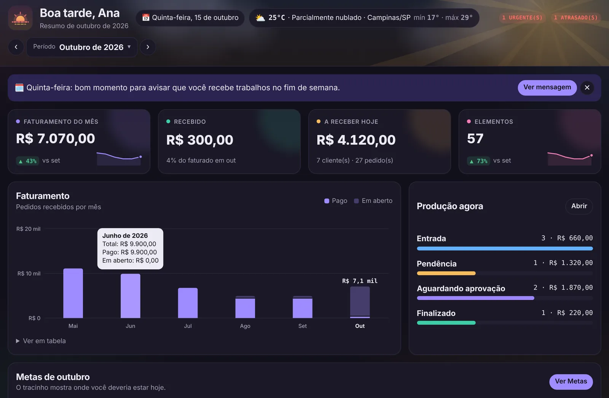
Uma equipe que trabalha por você
Cinco agentes de IA olham seus dados todo dia (e um sexto confere seus casos no visualizador 3D) e conversam com você como no WhatsApp: Sr. Otávio (gerente), Ana (vendas), Bia (financeiro), Mika (marketing) e Klose (análise de dados). Cada um muda de expressão conforme o que está acontecendo.
- Avisam atraso, cobrança e cliente sumido
- Gerente cobra a meta do dia e do mês
- Dá presente quando a meta é batida
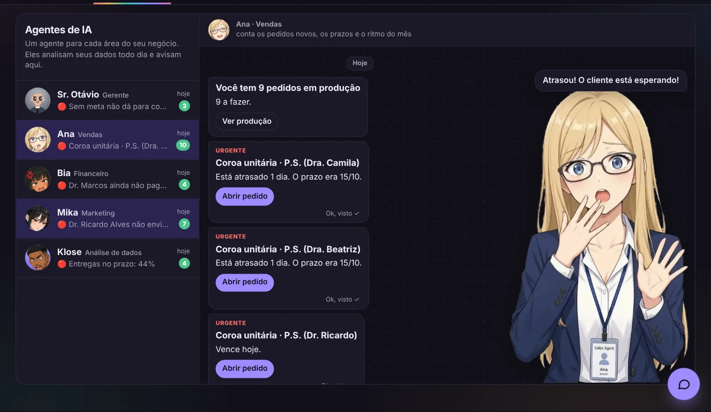
Eles aparecem pelas telas
De vez em quando um agente entra no canto da tela com um aviso ou uma dica do setor que você está vendo. Um toque e você resolve na hora ou abre a conversa com ele.
- Ana na Produção, Bia no Financeiro
- Sem exagero: no máximo uma vez a cada 4 minutos
- Dá para desligar quando quiser
Frase do dia pronta
Todo dia a Mika traz uma frase para mandar aos clientes, do jeito certo para cada dia: sexta é dia de avisar que você trabalha no fim de semana. Em feriados e datas como o Dia do Dentista, a mensagem já vem pronta.
- Uma frase para cada dia da semana
- Datas especiais 3 dias antes
- Copiar ou mandar no WhatsApp
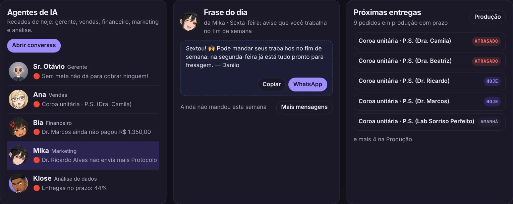
Escolha o cliente e mande
Toque no cliente e o WhatsApp abre direto na conversa dele, com a frase pronta e o nome dele no começo. Quem já recebeu na semana fica marcado, para você não mandar demais.
- Busca por nome
- Marca de enviado por 7 dias
- Avisa antes de repetir
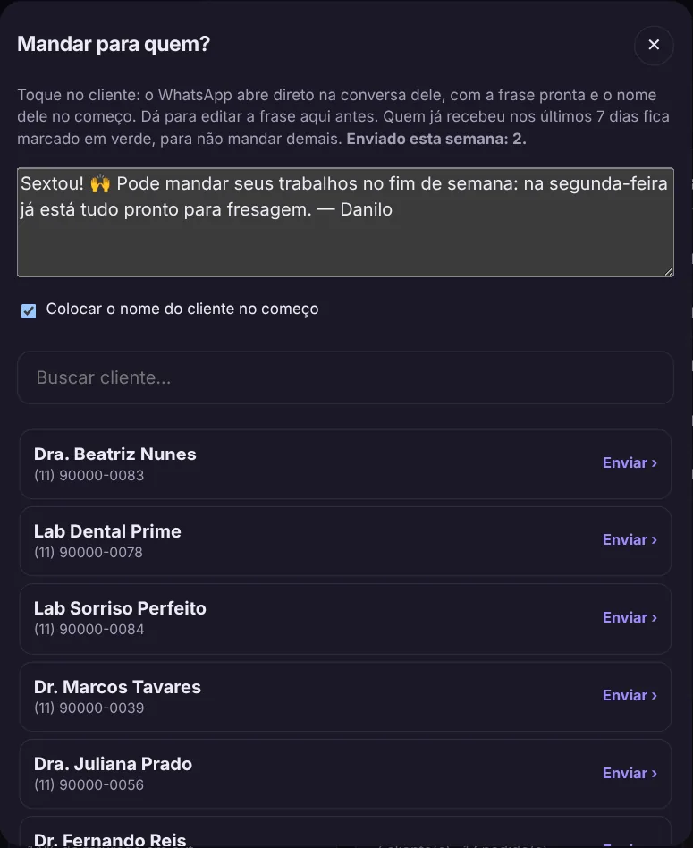
Mande o projeto para aprovação
Anexou o HTML do exocad ou o STL de fresagem? Um botão monta a mensagem e abre o WhatsApp do cliente com o link do caso em 3D. O pedido já muda de etapa sozinho.
- HTML vai para aprovação
- STL vai como finalizado
- O cliente vê em 3D e baixa o arquivo
Abra o caso e o agente confere para você
Um visualizador próprio, sem instalar nada: gire, meça em milímetros, anote e tire foto ou vídeo do caso. Ao abrir, o agente do visualizador procura possíveis erros antes de você mandar o trabalho.
- Buracos no escaneamento que podem esconder o término
- Registro de mordida torto, invadindo ou sem contato
- Oclusão da coroa e contatos proximais apertados ou frouxos
- STL, PLY, OBJ, ZIP e HTML do exocad
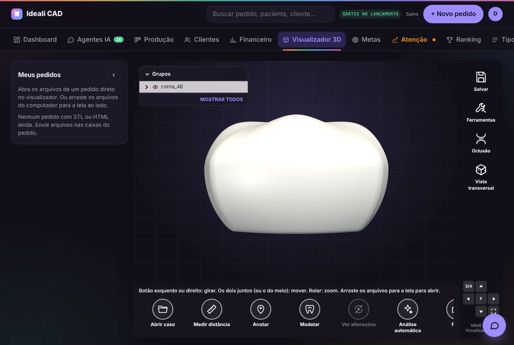
Seus pedidos em quatro colunas
Entrada, pendência, aguardando aprovação e finalizado. Cada card mostra um ícone do trabalho (implante, protocolo, placa, faceta, prótese fixa) para você bater o olho e saber o que é.
- Prazo e urgência
- Pendência com o motivo pronto para mandar
- Filtro por cliente

Odontograma desenhado
As duas arcadas com o que vai em cada dente: parafuso no implante, preparo, pôntico, linha fina nos elementos unidos da fixa e contorno na arcada inteira para placa e protocolo.
- Copiar nome do paciente e do cliente
- Arquivos STL do caso
- Valor calculado pela sua tabela

Relatório de produção em PDF
Uma planilha por cliente com tudo o que está em aberto, colorida por situação: amarelo em produção, vermelho aguardando informação, azul em aprovação e verde finalizado.
- Gerado em um clique
- Com ou sem valores
- Pronto para mandar no WhatsApp
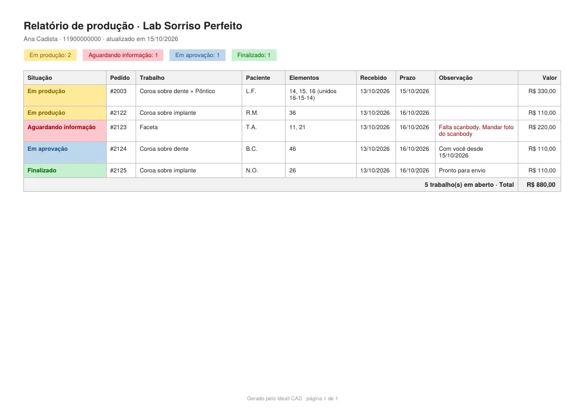
Quem pagou e quem está devendo
Faturado, recebido e em aberto do mês, as formas de pagamento e a lista de quem está devendo, de todos os meses.
- Registrar pagamento
- Ticket médio
- Recebido por mês
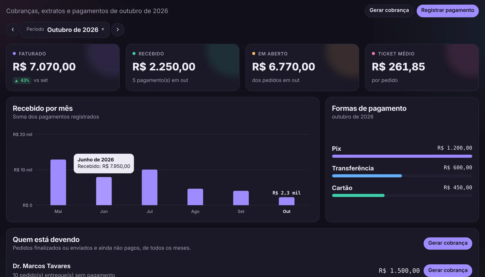
Cobrança em PDF com QR Code Pix
Escolha o cliente, marque os pedidos finalizados e ainda não pagos e o sistema gera o PDF com o total e o Pix copia e cola.
- QR Code Pix válido
- Desmarque o que não quer cobrar agora
- Nome e telefone seus no cabeçalho
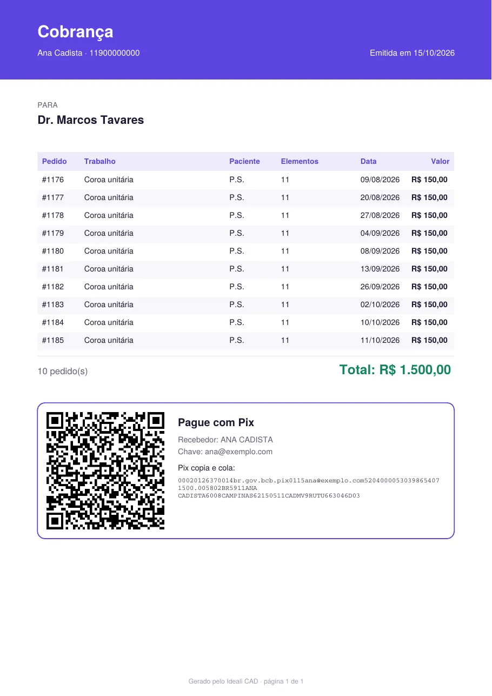
Metas do mês
Elementos e valor total que você quer fazer no mês, com protocolos e placas à parte. O sistema conta sozinho e mostra quanto falta por dia.
- No ritmo, um pouco atrás ou atrasado
- Onde você termina no ritmo atual
- Meta para o mês seguinte

Definir metas em segundos
Digite os números ou use a sugestão pela média dos seus últimos 3 meses + 10%.
- Dias de trabalho na semana
- Vale até você mudar
- Histórico de 6 meses
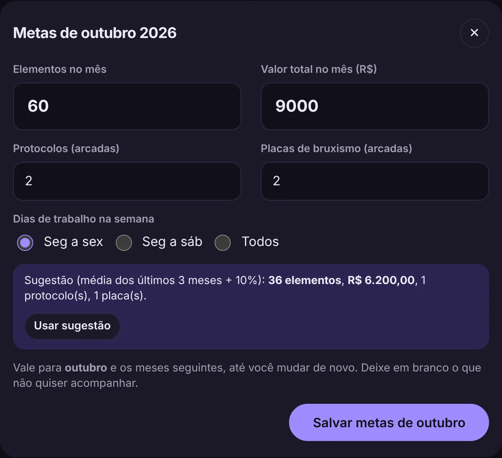
Saúde do negócio
Uma nota de 0 a 100 que compara seus pedidos recentes com o seu ritmo. A aba muda de cor e de nome no menu: Análises, Atenção, Perigo, Falência.
- Gráfico de 7 dias a 1 ano
- Explica o porquê da nota
- Começa com 7 semanas de uso

Sinais e alertas
Um radar para você agir antes de perder o cliente: quem parou de mandar, quem mudou o tipo de trabalho, se você está atrasando e quem está devendo.
- Mensagem pronta no WhatsApp
- Prioridade alta em destaque
- Boas notícias também

Previsão de pedidos
Quantos pedidos devem chegar nas próximas semanas ou meses, pelo ritmo de cada cliente, comparado com a sua produção média.
- Faixa de mínimo e máximo
- Tendência em %
- Ajuste de parâmetros

Por cliente e por tipo de trabalho
Quanto cada cliente mandou nos últimos 90 dias contra os 90 anteriores, de quanto em quanto tempo costuma pedir e que trabalho parou de mandar.
- Variação em %
- Ajustes por pedido
- Tempo até enviar e % no prazo
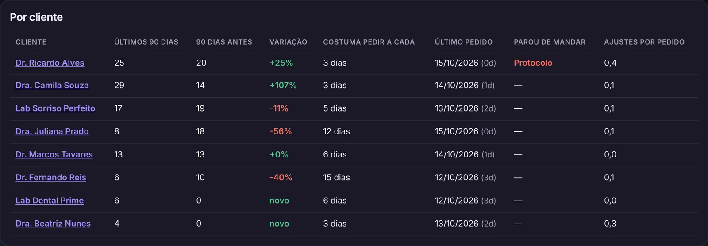
Ranking de clientes
Quem mais comprou no mês, com medalhas, quanto cada um representa do seu faturamento e a concentração nos 3 primeiros.
- Faixas de desconto por volume
- Qualquer mês
- Pedidos e elementos

Temas por personalidade
Sete cores para o sistema ficar com a sua cara: Ideali, Oceano, Esmeralda, Brasa, Rosé, Dourado e Grafite. Claro, escuro ou automático.
- Quiz de 4 perguntas
- Troca quando quiser
- Vale em todos os aparelhos
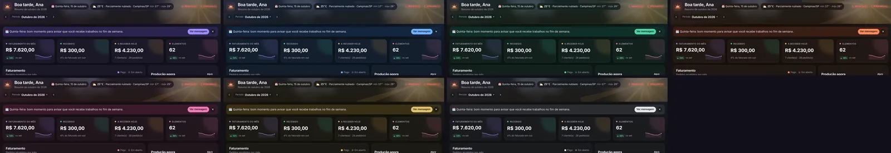
Pegue trabalhos da rede
Pedidos oferecidos por outros cadistas, laboratórios e clínicas, com valor, prazo e avaliação de quem pede.
- Filtro por trabalho
- Ordenar por valor ou prazo
- Em breve

Delegue quando lotar
Mande um pedido para outro cadista desenhar com sigilo: ele não vê seu cliente, o paciente nem o valor que você cobra.
- Você define o repasse
- Prazo com hora
- Em breve
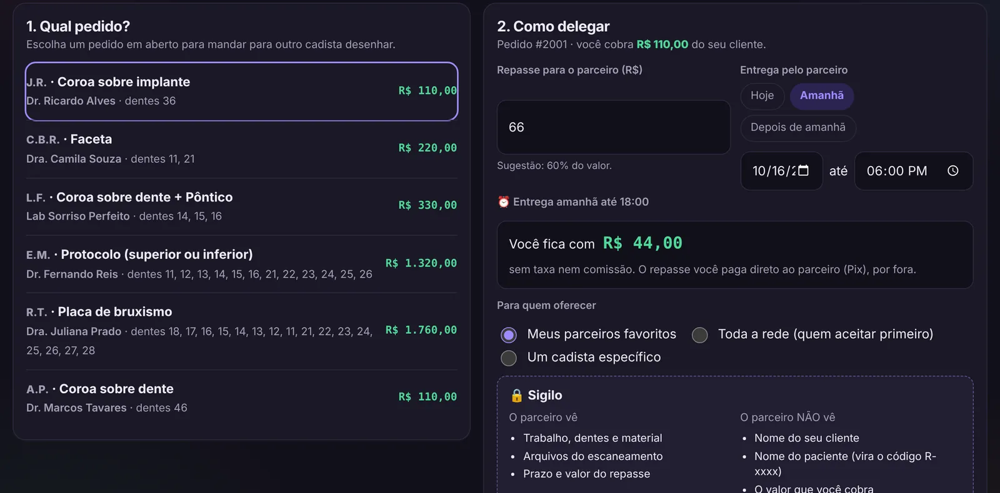